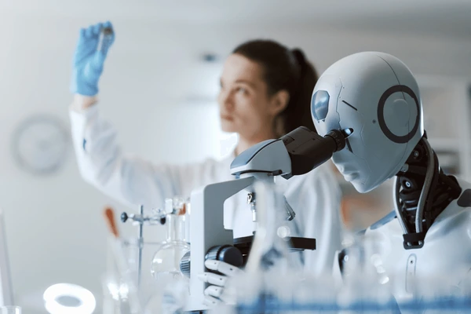

Artificial Intelligence and Machine Learning (AI/ML) is an innovative and rapidly evolving branch of engineering focused on creating systems capable of learning, adapting, and performing tasks that traditionally require human intelligence. AI/ML combines concepts from computer science, statistics, and data science to develop algorithms and models that enable machines to process and analyze vast amounts of data. The branch covers core areas like machine learning, deep learning, neural networks, natural language processing, and computer vision. Students are trained to develop intelligent systems that can perform tasks such as speech recognition, image processing, and autonomous decision-making, preparing them for the growing demand in industries like healthcare, finance, and robotics
The AI/ML branch focuses not only on theoretical foundations but also on practical applications and real-world problem-solving. Students learn how to build, train, and deploy machine learning models using cutting-edge tools and frameworks. With the increasing reliance on data-driven technologies, AI/ML engineers are in high demand across sectors such as automotive (self-driving cars), finance (fraud detection), and healthcare (diagnostic tools). By blending mathematical theory, software development, and data analytics, AI/ML professionals play a pivotal role in shaping the future of technology and driving innovations in automation, intelligent systems, and decision-making processes

Artificial Intelligence and Machine Learning
Artificial intelligence is not a substitute for human intelligence it is a tool to amplify human creativity and ingenuity

Artificial Intelligence and Machine Learning Lab Facility
The AI/ML lab facilities at our college are equipped with the latest tools and technologies to support students in their practical learning journey. These labs provide access to high-performance computing systems with powerful GPUs that are essential for running complex machine learning models and deep learning algorithms. Students work with industry-standard frameworks such as TensorFlow, PyTorch, and Keras, enabling them to design and train neural networks
In addition to machine learning frameworks, the AI/ML labs are equipped with tools for data visualization, natural language processing (NLP), and computer vision. Students engage in hands-on projects involving real-world datasets to implement AI solutions in fields like speech recognition, image processing, and predictive analytics.
In addition to machine learning frameworks, the AI/ML labs are equipped with tools for data visualization, natural language processing (NLP), and computer vision. Students engage in hands-on projects involving real-world datasets to implement AI solutions in fields like speech recognition, image processing, and predictive analytics.
